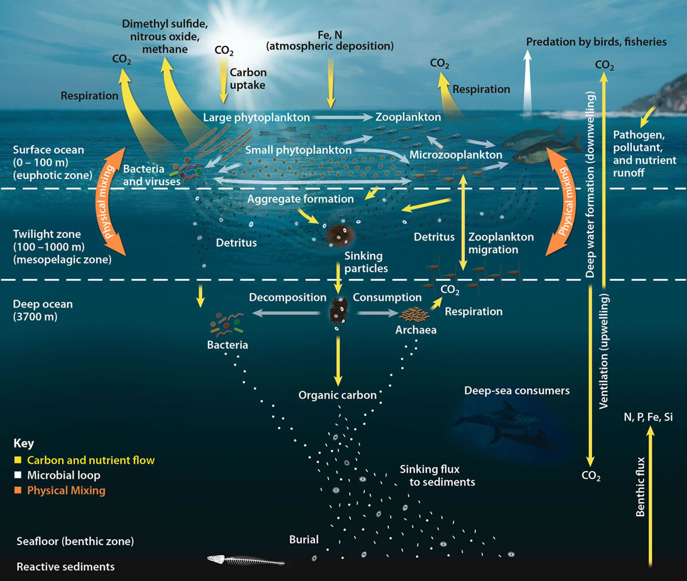

海洋の「カーボンポンプ」とは
地球上の大気・海洋・陸地間での炭素循環は、CO₂やメタンといった大気中の温室効果気体の濃度をコントロールし、地球の気候状態を調節する上で極めて重要な役割を果たします。このプロセスの大部分は、海洋とその生態系によって構成されます。
海洋の表層（水深0-100 m）では、植物プランクトンが光合成を行い、大気中のCO₂を取り込みます。オキアミなどの動物プランクトンがこれらの植物プランクトンを食べ、さらに呼吸を通じてCO₂を再び大気中に放出します。また海洋表層では風や波による物理的な混合が行われ、大気中の酸素とCO₂が海洋に供給されるとともに、栄養塩や微量金属、プランクトンなどが拡散されます。こうして海洋表層の混合層は、生態系のバランスを保っています。
US Department of Energy Office of Science
太陽光が僅かに届くトワイライトゾーン（100-1000 m）では、死んだ生物や廃棄物がデトリタスとして沈降します。このデトリタスは細菌や微生物によって分解され、有機炭素と栄養素が放出されます。動物プランクトンはこのゾーンで上下に移動し、栄養素と炭素を広範囲に運びます。さらに深い深海（1000 m以上）では、沈降したデトリタスが分解され、深海生物がこれを食べます。この分解と消費の過程で有機炭素は海底に埋められ、長期間にわたってCO₂が大気から取り除かれます。これらのプロセスを通じて、海洋のカーボンポンプは大気中のCO₂濃度を調整しています。
海洋全体の中でもとりわけ南極海は、人間活動に伴うCO₂の40％を吸収するとともに、地球温暖化に伴う熱の75%を吸収しており、地球気候を考えるうえで最も重要な領域であると言えます。こうした南極海のカーボンポンプは、その豊かな生態系によって支えられています。
全球炭素循環の根幹を支える、ナンキョクオキアミ
ナンキョクオキアミは、海洋のカーボンポンプを構成する基本的な要素です。この小さなエビのような生物は、南極海に豊富に存在し、クジラ、アザラシ、ペンギンなどの様々な海洋生物の主要な餌となっています。オキアミは植物プランクトンを食べ、オキアミや他の生物が死んだり老廃物を出すと、蓄積された炭素が海底へと沈みます。
驚くべきことに、ナンキョクオキアミの存在量は質量換算で約3.8億トンで自然界では最も多く、人類（79億人/4億トン）に匹敵する唯一の生物種で、地球上で人類よりも繫栄している唯一の生物といえます。
Australian Antarctic Division